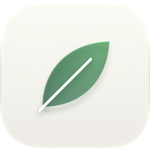
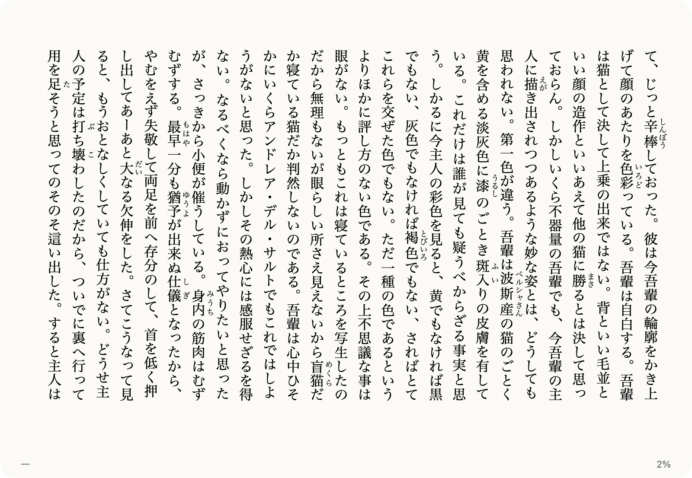

目次はキー一つ
⌘T を押すと、ページの上に浮かびます。本文は動きません。


オープンソースの Mac 用電子書籍リーダー · EPUB · MOBI · AZW3 · PDF · FB2 · CBZ
一冊に一つのウインドウ。本棚はなく、読んだ場所だけ覚えます。縦書きにも対応。

Leaf は無料でオープンソースの Mac 用電子書籍リーダーです。EPUB、MOBI、AZW3、PDF、FB2、CBZ をダブルクリックすれば読めて、ウインドウを閉じれば終了します。ライブラリも、コピーも、アカウントもありません。読んだ場所は覚えています。縦書きの本はそのまま縦書きで開きます。ネイティブ SwiftUI アプリ、約 5 MB、macOS 15 以降。Amazon とは関係ありません。
ライブラリなし。コピーなし。アカウントなし。
書類のように開き、閉じれば終了。
ファイル名を変えても、移動しても続きから。
メニュー、ショートカット、調べる、翻訳。すべて Mac 標準のもの。
読みやすさは細部に。
自分の読む速さから推定。
縦書きの本はそのまま縦書き、次のページは左。ルビもそのまま。フォント、太さ、字間、行長。プリセット五つ、自分のも保存できます。
注番号をクリックすると、そのページに注が出ます。
⌘F で本の中を検索、⌘L でどこへでも移動。
ハイライト、メモ、ブックマーク。Markdown か Kindle の My Clippings 形式で書き出し。単語はワンステップで調べられます。
EPUB、MOBI、AZW3、PDF、FB2、CBZ。変換不要。
紙、セピア、ダーク。日本語を含む 8 言語の UI。
⌘T を押すと、ページの上に浮かびます。本文は動きません。
Readest は最も多機能。Apple ブックは Mac に最初から。Calibre は蔵書管理が得意。Leaf がするのは一つ、本を開くことだけ。
| Leaf | Readest | Apple Books | Calibre | |
|---|---|---|---|---|
| MOBI · AZW3 | ✓ （DRM なし） | ✓ | 非対応 | ✓ |
| ファイルを開く | その場で開く、ライブラリなし | その場で開き、ライブラリに登録 | ライブラリに読み込み | ライブラリが主、ビューアは単独起動可 |
| 残るもの | 読んだ場所、ハイライト、ブックマークを専用フォルダに | ライブラリ項目：書名、パス、表紙 | ライブラリ内のコピー | ライブラリのデータベース |
| ウインドウを閉じると | アプリが終了 | 動き続ける | — | — |
| ハイライトとメモ | ✓ Markdown と Kindle の My Clippings に書き出し | ✓ | ✓ | ✓ |
| 他のプラットフォーム | Mac のみ | iOS · Android · Windows · Linux · Web | iPhone · iPad | Windows · Linux |
| インターフェース | ネイティブ（SwiftUI） | Web 技術（Tauri） | ネイティブ | Qt |
| ダウンロードサイズ | 約 5 MB | 約 67 MB | macOS 内蔵 | 約 350 MB |
| 動作環境 | macOS 15+ | macOS 12+ | — | macOS 14+ |
| 価格 · ライセンス | 無料 · GPL-3.0 | 無料、クラウド同期は有料オプション · AGPL-3.0 | 無料 · プロプライエタリ | 無料 · GPL-3.0 |
Readest は 2026 年 10 月 30 日に確認：リリース 0.12.16 と macOS 版の実機テスト。Apple ブックと Calibre は 2026 年 10 月 3 日に Apple ブックのヘルプ、calibre 9.15.0 for macOS、calibre ビューアのマニュアルで確認。
Leaf は Apple の公証を受けていません。初回起動時に一度だけ許可してください。
Leaf.dmg を開き、Leaf を「アプリケーション」フォルダにドラッグします。
Leaf をダブルクリック。macOS が開発元を確認できないと表示したら「完了」をクリック。
「システム設定 › プライバシーとセキュリティ」を下にスクロールし、「このまま開く」をクリック。
macOS 15 以降が必要です。Kindle ストアで購入した本など DRM 付きの本は開けません。
手はキーボードの上のまま。
| ページをめくる | ←→Space |
| 目次 | ⌘T |
| 本の中を検索 | ⌘F⌘G |
| パーセントや位置へ移動 | ⌘L |
| 設定 | ⌘, |
| 文字を大きく / 小さく | ⌘=⌘- |
| 実際のサイズ | ⌘0 |
インストールと使い方について。
Leaf をインストールして、Finder でファイルをダブルクリックするか、右クリックして「このアプリケーションで開く › Leaf」を選びます。DRM のないファイルに限ります。
Leaf は DRM のない EPUB、MOBI、AZW3 に加えて PDF、FB2、CBZ を、一冊ずつ別のウインドウで開きます。読む速さから推定した残り時間、位置番号、組版プリセット、その場で出る注、本の中の検索があり、ハイライト、メモ、ブックマークと書き出しもできます。縦書きの本は縦書きのまま。ウインドウを閉じれば終了。ストアもアカウントもありません。
Readest はクロスプラットフォームで、ライブラリ、同期、読み上げがあります。Leaf は Mac 専用で、意図的に少なくしています：ライブラリなし、同期なし、本を閉じれば終了。読んだ場所、ハイライト、ブックマークは専用フォルダに保存し、本のファイルには触れません。約 5 MB、Readest は約 67 MB。
はい。無料で、GPL-3.0 のオープンソースです。
Leaf は Apple の公証を受けていません。一度開いて警告を閉じ、「システム設定 › プライバシーとセキュリティ」で「このまま開く」をクリックしてください。必要なのは一度だけです。
DRM のないファイルだけです。Kindle ストアで購入した本にはたいてい DRM があり、Leaf では開けません。
いいえ。Leaf は独立したオープンソースプロジェクトで、Amazon とは関係ありません。DRM のない EPUB、MOBI、AZW3 を Mac で読むためのもので、ストアもアカウントもありません。
ありません。Leaf は本をその場で開き、読み込みもコピーもしません。Leaf が覚えるのは各本の読んだ場所だけ。ほかの Mac の書類アプリと同じく、最近のファイルは「ファイル › 最近使った項目を開く」に並びます。